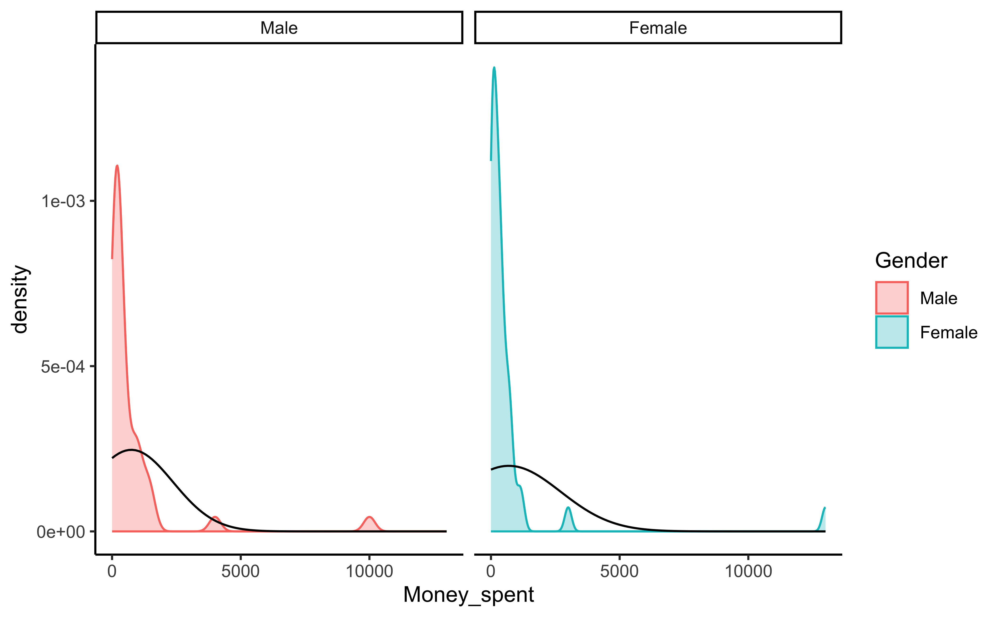
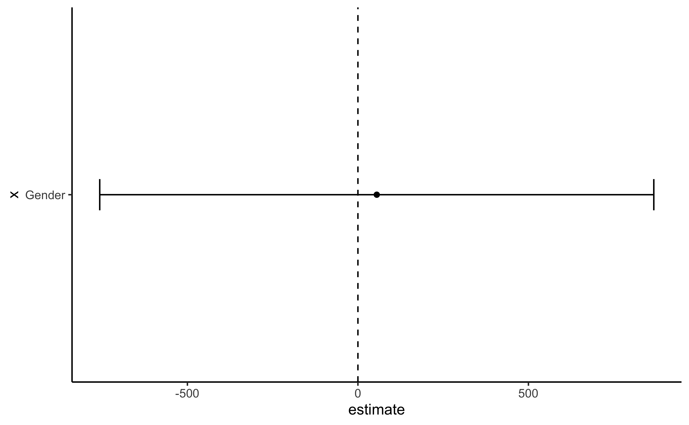
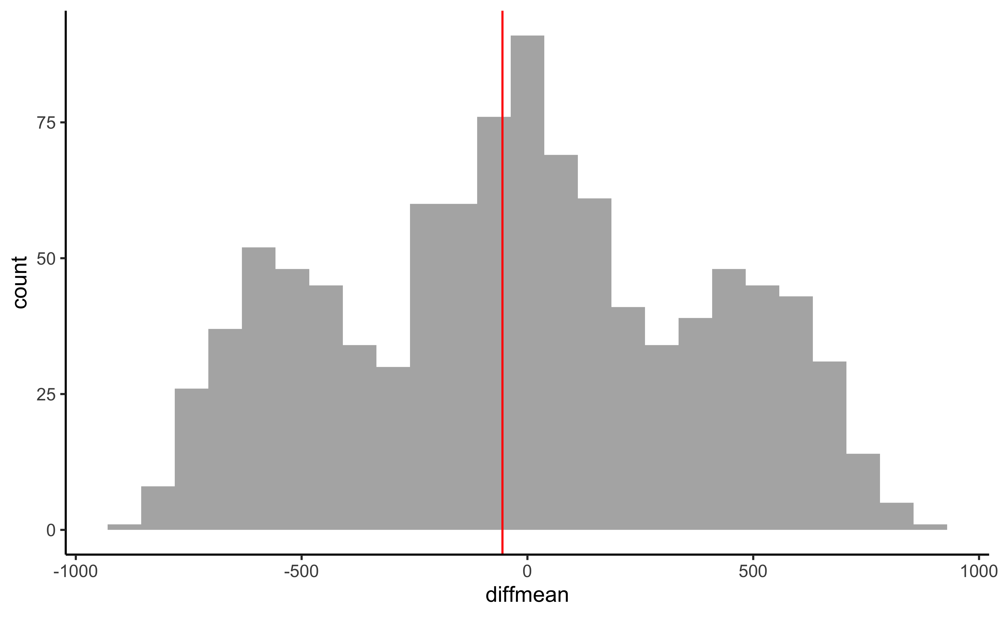

knitr::opts_chunk$set(message = FALSE,warning = FALSE)
library(tidyverse)
library(mosaic)
library(skimr)
library(crosstable)
library(ggformula)Intro
Analyzing the pocketmoney dataset
Read Data
pocketmoney <- readxl::read_xlsx("../../data/Pocket Money.xlsx")
pocketmoneyMunging
pocketmoney_modified <- pocketmoney %>%
mutate(Gender = as_factor(Gender))pocketmoney_modified %>%
crosstable(Money_spent ~ Gender) %>%
as_flextable()label | variable | Gender | |
|---|---|---|---|
Male | Female | ||
Money_spent | Min / Max | 0 / 1.0e+04 | 0 / 1.3e+04 |
Med [IQR] | 250.0 [150.0;842.0] | 280.0 [85.0;500.0] | |
Mean (std) | 748.6 (1636.5) | 693.3 (2035.8) | |
N (NA) | 41 (0) | 41 (0) | |
pocketmoney_modified %>%
gf_density(~ Money_spent | Gender, fill = ~ Gender,
colour = ~ Gender, alpha = 0.3) %>%
gf_fitdistr(dist = "norm") %>%
gf_refine(theme_classic())
obs_mean_diff = diffmean(Money_spent ~ Gender, data = pocketmoney_modified)
obs_mean_diff diffmean
-55.29268 Not really Gaussian.
Shapiro Test
shapiro.test(pocketmoney_modified %>%
filter(Gender == "Male") %>%
select(Money_spent) %>%
as_vector()) # Can't handle even single col data frame
Shapiro-Wilk normality test
data: pocketmoney_modified %>% filter(Gender == "Male") %>% select(Money_spent) %>% as_vector()
W = 0.40726, p-value = 1.136e-11shapiro.test(pocketmoney_modified %>%
filter(Gender == "Male") %>%
select(Money_spent) %>%
as_vector()) # Can't handle even single col data frame
Shapiro-Wilk normality test
data: pocketmoney_modified %>% filter(Gender == "Male") %>% select(Money_spent) %>% as_vector()
W = 0.40726, p-value = 1.136e-11Neither of the Money_spent sub-variables are normal. So t-test won’t really work, but still.
Inference
t-test
mosaic::t_test(Money_spent ~ Gender, data = pocketmoney_modified) %>%
broom::tidy()mosaic::t_test(Money_spent ~ Gender, data = pocketmoney_modified) %>%
broom::tidy() %>%
gf_errorbar(conf.low + conf.high ~ "Gender", data = ., width = 0.1) %>%
gf_point(estimate ~ "Gender") %>%
gf_hline(yintercept = 0, linetype = "dashed") %>%
gf_refine(coord_flip()) %>%
gf_theme(theme_classic())
Wilcoxon Test
wilcox.test(Money_spent ~ Gender, data = pocketmoney_modified) %>%
broom::tidy()p.value in both cases is way to high for us to reject the NULL Hypothesis that there is no difference between Veggies and Non-Veggies in their tip size.
Permutation Test
Just for kicks, a permutation test
null_dist <- do(999) * diffmean(Money_spent ~ shuffle(Gender), data =pocketmoney_modified)
head(null_dist)gf_histogram(~ diffmean, data = null_dist) %>%
gf_vline(xintercept = ~ obs_mean_diff, color = "red") %>%
gf_theme(theme_classic())
prop(null_dist$diffmean <= obs_mean_diff)prop_TRUE
0.4534535 Again the null distribution from permutations staddles the observed mean difference and hence we cannot reject the NULL Hypothesis that there is no difference between Male and Female pocket moneys.